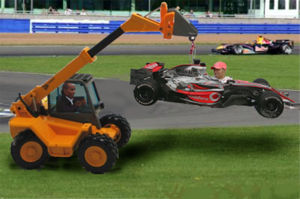

Test para ser piloto de Fórmula 1
 De: La Frikipedia, la enciclopedia extremadamente seria.
De: La Frikipedia, la enciclopedia extremadamente seria.
Bienvenidos a este nuevo test. Aquí podrás obtener tu superlicencia para poder llegar a ser un piloto de Fórmula 1 hecho y derecho. Además, si nos sobornas bien obtienes tu superlicencia, podrás presumir de ella y serás la envidia de ciertos paquetes hombrecillos que actualmente rondan este chenchullo mundillo de la Fórmula 1, tales como Jaimito, Vitalmente Petrificado o Buemanta, entre otros.
Empecemos el test
Para contestar, marcadlo en la discusión.
1ª Pregunta
2ª Pregunta
3ª Pregunta
Pasarás grandes momentos en
el hospital este mundillo de la
Fórmula 1 - ¿Como se llama el popular calvito que retransmite la Fórmula 1?
4ª Pregunta
- ¿Con que coche compite compite Dani Pedrosa?
- a) Con uno muy raro que sólo tiene 2 ruedas.
- b) Con un Honda.
- c) Dani Pedrosa es motociclista.
5ª Pregunta
- ¿Que pilotos formaban parte del equipo Toyota en 2007?
6ª Pregunta
- ¿Que es el pit lane?
- a) El jersey de lana que lleva Brad Pitt.
- b) La calle de boxes.
- c) La ley que prohíbe tocar el pito durante la carrera.
7ª Pregunta
Vivirás momentos de alta tensión no aptos para cardiacos.
- ¿Como se llama el antiguo director de Renault?
- a) Corleone.
- b) Comendatore.
- c) Briatore.
8ª Pregunta
- ¿Cuando ha de llevar puesto un piloto el casco?
- a) Justo antes de pegarse un piñazo.
- b) Cuando sea tan feo, tan feo, que no quieran que vean su careto (como Sébastien Buemi).
- c) Siempre.
9ª Pregunta
- ¿Que significado tiene una bandera a cuadros?
- a) Que nos acercamos a un museo
(Ay Dios mío, un museo, nooooooooooooooooooo)
- b) Que al que gane le regalan un ajedrez
- c) Final de la carrera
10ª Pregunta

Tendrás la oportunidad de conducir
coches como este
- Cuando ha habido un grave accidente y se detiene la carrera, aparece en pista el...
11ª Pregunta
- ¿Quién tiene preferencia en los pasos de cebra de los circuitos?
- a) Las cebras.
- b) Los todos los peatones, exceptuando al hombre invisible.
- c) En los circuitos no hay pasos de cebra.
12ª Pregunta
- ¿Cuanto tiempo tarda de media un Fórmula 1 en repostar?
- a) Depende del número de ruedas que tenga un Fórmula 1.
- b) 45 segundos.
- c) 4-5 segundos.
13ª Pregunta
14ª Pregunta
- ¿Cómo se llama el circuito de Canadá?
15ª Pregunta
- ¿Dónde tienen el volante los monoplazas?
- a) A la derecha como los ingleses.
- b) En el centro.
- c) A la izquierda.
16ª Pregunta
- ¿Con que bebida se festeja el podio?
17ª Pregunta
18ª Pregunta
Conocerás a muchas chicas
, aunque como no eres Fernando Alonso y eres gay no las harás ni caso - ¿Qué piloto tiene el nombre mas adecuado para participar en Fórmula 1?
19ª Pregunta
- ¿Qué equipo ha sido, es y será el más desastroso de los que han participado en Fórmula 1?
20ª Pregunta
- ¿De cuántos equipos ha sido despedido Luca Badoer?
- a) Uno, Williams F1 Team.
- b) Todos por los que ha pasado, o sea 4.
- c) 0, siempre se iba de ellos porque él quería (O eso le decía a la prensa).
21ª Pregunta
- ¿Que tres equipos eligirías como los más penosos?
22ª Pregunta
 Serás conocido mundialmente por
tus cagadas tu habilidad al volante.
- ¿Que pareja de pilotos ha sido, es, y será la más enchufada de la historia?
23ª Pregunta
24ª Pregunta
- ¿Quién suele sufir la dolencia de "pies planos"?
- a) Los pilotos, al pisar mucho los pedales.
- b) Los mecánicos, quienes no se percatan de la anchura de las ruedas.
- c) Charles Chaplin.
25ª Pregunta
- ¿Quién es el piloto que más sanciones ha recibido en una temporada?
26ª y última pregunta
- ¿Qué dos pilotos son los más propensos a lanzarse a por otro para lijárselo, con 2 cojones?
Muy bien, has terminado el test de iniciación, recuerda que cada acierto vale 2 puntos y para aprobarle has de sacar un 26/52 o más puntos. Ahora tendrás que rellenar el formulario de abajo con tus datos personales, y así obtener tu superlicencia de pescar de piloto oficial de Fórmula 1.
Datos personales

Pega tu
afoto aquí (Hasta que no la pegues no habrá foto disponible)
- ¿Tu cochecito de bebé tenía volante?
- ¿Cuánto tiempo puedes resistir sin ir al baño?
- 12 minutos
- 2 horas
- 12 horas
- 10 días
- ¿Cuando viajas en familia le dices a tu papá que corra mas?
- ¿Te gustaría viajar al otro barrio?
- ¿Subirías a un bólido pilotado por Yuji Ide?
- ¿Cabrías en un monoplaza pilotado por Ofelia?
- ¿Te gustaría viajar por todo el mundo?
- ¿Eres consciente de que en tu parada en boxes deberás ponerte tu los neumáticos?
- ¿Aceptarás que todas las multas y puntos que te resten por las posibles infracciones serán aplicados a tu padre?
- ¿Que impacto crees que serías capaz de resistir?
Por último, y lo más importante, tu firma.
En caso de aprobar, la Fórmula 1 te da el pésame la bienvenida.
Autor(es):
- Conan
- Gñapero Solitario
- Butters2
- ADrIaN1996
- Genericool
- Jefe112
- AztroCat01
Frikipedia 2005-2016, Licencia
GFDL 1.2 - Extraído por FrikiLeaks